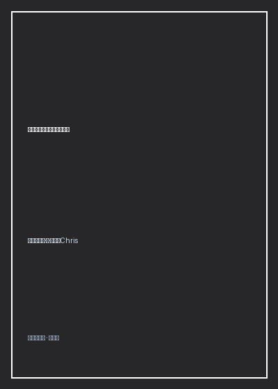

不与自己对抗你就会更强大

总体观点
现代社会普遍鼓吹“高自尊”（Self-Esteem），但心理学临床研究表明，建立在“比别人更优秀、更成功、更漂亮”基础上的自尊极其脆弱，一旦遭遇挫折、失业或容貌衰老，虚幻的自尊便会瞬间崩塌并转化为毁灭性的自我厌恶。自我关怀心理学鼻祖克里斯汀·内夫博士在《不与自己对抗你就会更强大》（Self-Compassion）中掀起了一场颠覆性的心理革命。
作者指出：对抗人生的痛苦，需要的不是逼迫自己变得完美无缺，而是像对待自己最珍爱的密友一样温柔善待处于困境中的自己。全书确立了自我关怀的三大核心支柱——对自己善意而非严苛自责、理解共通人性（苦难与不完美是全人类的共同经历而非个人的羞耻绝境）、保持静观当下（正念觉察而非过度沉溺放大情绪）。它为深陷焦虑、完美主义与严重内耗的现代人，提供了一套具有坚实神经科学支撑的深层自我疗愈体系。
核心观点
-
1. 自尊是外在攀比的毒药，自我关怀是无条件的包容港湾
自尊依赖于“我必须高于平均水平”的虚荣优越感，而自我关怀则建立在“无论我成功或失败，我都值得被爱被呵护”的绝对接纳上。
考试考砸或提案被否决时，追求自尊的人会陷入抑郁羞耻，而具备自我关怀的人会轻抚胸口对自己说：“这确实很难受，但每个人都会经历失败，我很尽力了。” -
2. 共通的人性体验：你的痛苦并非孤绝的羞耻孤岛
遭遇不幸时人往往感到孤立无援并自责“为什么倒霉的总是我”，意识到不完美与挫折是人类共通的生存底色，能瞬间打破孤独牢笼。
面对自闭症儿子的情绪失控，内夫最初深陷绝望与自怜，直到她意识到世界上有数百万父母正与自己并肩承受同样的考验，沉重负担顿时化为深沉慈悲。 -
3. 静观当下：看清情绪但不被狂暴的叙事吞噬
正念意味着客观觉察当下的痛苦感受，既不盲目压抑逃避，也不添油加醋脑补“我的人生全完了”的灾难化剧本。
当感到愤怒或委屈时，深呼吸并将注意力集中在胸口的紧绷感上，默念“这是一段艰难的时光”，让情绪波浪自然涌起并自然退潮。 -
4. 解除内心严苛批评家的武装：化鞭子为拥抱
人们误以为严厉苛责自己是督促进步的动力，但神经学证据表明，自我攻击会激活交感神经威胁警报，导致心智陷入瘫痪与拖延。
用鼓励慈爱的内在声音替换脑海中那个尖酸刻薄的考官声音，以关切支持促成行动，戒烟与减肥的长期成功率比自责式惩罚高出两倍以上。 -
5. 身体接触的安抚魔法：激活副交感神经释放催产素
当感到恐惧无助时，将右手掌轻轻按在左胸心脏位置或温柔抱住双臂，肉体触感能直接向脑干发送安全信号。
在遭遇职场重大批评后独自躲入洗手间，用双手捧住面颊深呼吸三十秒，生理层面的自我安抚能迅速平复狂跳的心率与皮质醇飙升。
全书结构
-
第一部分 发现自我关怀：三大核心要素
解构对自己友善、共通人性与静观当下三大支柱，厘清自我关怀与自怜、自恋、放纵的本质界限。
辨析自怜是将痛苦无限放大并感到与世隔绝，而自我关怀是将个人苦难融入人类群体的同理心之海。 -
第二部分 自我关怀的科学力量：告别自尊陷阱
结合神经内分泌学研究，揭示自我批判如何释放压力荷尔蒙，而自我关怀如何激活催产素与安全神经回路。
引用实验数据证明具备高自我关怀度的人在遭遇离婚或严重疾病时，罹患创伤后应激障碍（PTSD）的概率显著降低。 -
第三部分 践行自我关怀：化解内耗与羞耻感
提供手把手的自我关怀日记模板、应对严苛自我对话的改写心法，以及摆脱身体意象焦虑的技巧。
练习“写一封来自无条件爱你的朋友的信”，以第三方全知视角审视自己的缺陷并给出深切抚慰。 -
第四部分 关系中的自我关怀：亲密关系与育儿的平衡
探讨如何在照料他人（孩子、病弱老人、伴侣）时不被同理心疲劳掏空，建立充沛的情感内在蓄水池。
讲述内夫带着重度自闭症儿子前往蒙古大草原接受骑马治疗的亲身经历，展现母亲在接纳现实中绽放的从容大爱。